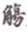
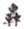
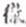

Các nhà Nho thời xưa khi dạy học, không chỉ rõ ràng cách phiên âm trong các tự điển Trung Hoa, và nhiều khi ta thấy hai nhà phiên âm khác nhau, do đó cùng một chữ mà đọc hơi khác nhau.
Học giả Lê Ngọc Trụ là người đầu tiên đã tìm ra được qui tắc phiên âm rất chính xác, dựa trên những luật về ngữ âm, và đã đem phổ biến trong nhiều tạp chí. Bài Lối đọc chữ Hán của ông đăng trong tạp chí Văn Hữu số 21 (năm 1962) là một tài liệu quí cho những người nghiên cứu chữ Hán, nhưng có phần hơi khó hiểu đối với những bạn mới bắt đầu học. Vả lại tôi chắc nhiều bạn tìm số Văn Hữu đó không ra, cho nên dưới đây tôi xin tóm tắt những điều quan trọng để bổ túc đoạn Dùng tự điển Trung Hoa trong chương VIII.
*
1. Trước hết bạn nên nhớ những thanh nào của Trung Hoa phù hợp với những thành nào của ta.
Trung Hoa có bốn thanh: bình, thượng, khứ, nhập. Mỗi thanh lại có hai bực bổng và trầm.
Bình thanh bực bổng phù hợp với giọng ngang của ta (như tiên)
trầm phù hợp với giọng huyền của ta (như tiền)
Thượng thanh bực bổng phù hợp với giọng hỏi của ta (như tiển)
trầm phù hợp với giọng hỏi của ta (như tiễn)
Khứ thanh bực bổng phù hợp với giọng sắc của ta (như tiến)
trầm phù hợp với giọng nặng của ta (như tiện)
Nhập thanh bực bổng phù hợp với giọng sắc của ta (như tiếc)
trầm phù hợp với giọng nặng của ta trong những tiếng có c, ch, p, t ở cuối (như tiệc)
Vậy bực bổng có: ngang, hỏi, sắc.
bực trầm có: huyền, ngã, nặng.
2. Rồi bạn phải nhớ qui tắc này.
Tiếng trước cho âm khởi đầu và định bực của thanh (bổng hay trầm).
Tiếng sau cho vận và định loại thanh (bình, thượng, khứ hay nhập).
a) Chữ 仙, Khang Hi tự điển chua: tương + nhiên
Từ Nguyên và Từ Hải chua: tức + nhiên.
* Ta áp dụng quy tắc trên vào Khang Hi tự điển:
Tiếng trước, tức tiếng tương cho ta:
- âm khởi đầu là t.
- bực bổng (coi lại điều 1 ở trên).
Tiếng sau, tức tiếng nhiên cho ta:
- Vận là iên
- Loại thanh là bình
Vậy chữ 仙 phải có âm khởi đầu là t, vận là iên, thanh bình, bực bổng, (tức là giọng ngang của ta), và ta phải đọc là tiên.
* Ta áp dụng qui tắc vào Từ Nguyên và Từ Hải
Tiếng trước, tiếng tức cho ta:
- âm khởi đầu là t
- bực bổng.
Tiếng sau, tiếng nhiên cho ta:
- vận là iên.
- Loại thanh là bình.
Kết quả là: âm khởi đầu là t, vận iên, thanh bình, bực bổng, vậy cũng đọc là tiên.
b) Chữ 見, Khang Hi tự điển chua: cổ + điện.
Từ Nguyên và Từ Hải chua: tức + nhiên.
* Ta áp dụng quy tắc trên vào Khang Hi tự điển:
Tiếng trước cổ cho ta âm khởi đầu là c và bực bổng.
Tiếng sau điện cho ta vận iên và thanh khứ (coi lại điều 1).
Rốt cuộc ta có: c + iên, khứ thanh, bực bổng (giọng sắc): kiến.
* Lại áp dụng vào Từ Nguyên và Từ Hải:
Tiếng trước ký, cho ta âm khởi đầu là k và bực bổng.
Tiếng sau yến cho ta vận iên và thanh khứ.
Rốt cuộc ta có: k + iên, khứ thanh, bực bổng (giọng sắc): kiến.
c) Chữ 健, Khang Hi tự điển chua: cừ + kiến.
Từ Nguyên và Từ Hải chua: kỵ + yến.
Cũng theo cách trên, Khang Hi tự điển cho ta:
c + iên, bực trầm (bực của cừ) và thanh khứ (thanh của kiến) và phải đọc là kiện
Còn theo Từ Nguyên và Từ Hải thì là:
k + iên, bực trầm (bực của kỵ) và thanh khứ (thanh của yến), vậy phải đọc là: kiện
d) Chữ 本, Khang Hi tự điển chua: bố + thổn.
Từ Nguyên và Từ Hải chua: bố + ổn.
Khang Hi tự điển cho:
b + ôn, bực bổng (bực của bố), thanh thượng (thanh của thổn), và ta phải đọc là bổn.
Còn Từ Nguyên và Từ Hải cho:
b + ôn, bực bổng ( bậc của bổ), thanh thượng (thanh của ổn), và ta cũng đọc là bổn.
e) Chữ 末, Khang Hi tự điển chua: mạc + bát.
Từ Nguyên và Từ Hải chua: mộ + hoạt (hạt vận = vần hạt).
Vậy theo Khang Hi, ta có:
m + át, bực trầm (bực của mạc), thanh nhập (vì bát có t ở cuối), và ta phải đọc là mạt (nhập thanh, trầm).
Còn theo Từ Nguyên và Từ Hải thì:
m + oát, bực trầm (bực của mộ), thanh nhập (vì hoạt có t ở cuối) và ta phải đọc là mạt vì tự điển ghi là vần hạt.
3. Nếu tiếng trước để phiên thiết khởi đầu bằng nguyên âm thì ta tra cũng khởi đầu bằng nguyên âm:
Đây chỉ là một trường hợp đặc biệt của qui tắc 2, tức qui tắc: tiếng trước cho âm khởi đầu.
Thí dụ:
a) Chữ 衣 Khang Hi tự điển cho ư + hi, Từ Nguyên và Từ Hải cho ất + hi
Tiếng trước ư (hoặc ất) khởi đầu bằng nguyên âm, vậy nó không cho phụ âm, mà chỉ cho bực thanh là bổng;
Tiếng sau hi cho vận và loại thanh: bình.
Rốt cuộc là: không có phụ âm + i, bình thanh, bực bổng, vậy phải đọc là y.
b) Chữ 安 Khang Hi tự điển cho ư + hàm, Từ Nguyên và Từ Hải cho a + can.
Ta có: không phụ âm + an, bình thanh, bực bổng, và phải đọc là an
Nhớ ba nguyên tắc trên rồi, bạn thử áp dụng và tra cách đọc những chữ 今, 飽, 詭, 郢, 寅,

, 綺, 火, 行, 剖,
,並, 匙, 遮, 一,
, xem có nhận ra được điều gì khác thường không.Chẳng hạn chữ 今, theo đúng tự điển, phải đọc là câm. Tôi nhận thấy tiếng Hán không có vần im, chỉ có vần âm, như thâm (sâu), tâm (tim), tầm (tìm), trầm (chìm)…, đọc 今 là kim là theo giọng của ta.
Về chữ 剖, bạn tra Hán Việt từ điển của Đào Duy Anh, rồi Việt Nam tự điển của Thiều Chửu xem cách đọc nào đúng tự điển Trung Hoa.
Về chữ 飽, bạn tra Hán Việt từ điển của Đào Duy Anh, rồi Việt Nam tự điển của Hội Khai Trí Tiến Đức xem cách đọc trong cuốn nào đúng.
Trong khi đọc ta nên tìm tòi, so sánh như vậy, vừa nhớ lâu mà lại vừa thấy hứng thú.
4. Một lối chú âm nữa ít thông dụng trong các tự điển Trung Hoa là dùng một chữ có một thanh nhất định rồi đọc ra một thanh khác.
Thí dụ chữ 个, Khang Hi tự điển ghi: 哥 (ca) khứ thanh.
Ở đây ta cũng có thể áp dụng qui tắc 2 được. Chúng ta đã biết theo qui tắc 2, ta cần phải biết bốn yếu tố rồi mới đọc được một tiếng:
a - âm khởi đầu
b - vận
c - bực của thanh
d - và loại thanh
Khang Hi tự điển cho: ca và khứ thanh. Vậy ta biết loại thanh rồi (khứ thanh) tức yếu tố d; còn ba yếu tố trên a, b, c tất phải nằm trong chữ ca; nghĩa là chữ ca phải cho ta:
a - âm khởi đầu là c
b - vận là a
c - bực của thanh là bổng
Rốt cuộc ta có:
c + a, thanh khứ, bực bổng
và ta phải đọc là cá.
Một thí dụ nữa.
Chữ 入, chua là 任 (nhậm) nhập thanh.
Nhậm cho ta nh + âm, bực trầm.
Vậy phải đọc 入 là nhập (nh + âm, thanh nhập, bực trầm)
5. Sau cùng cách chú âm giản dị nhất, nhưng cũng ít dùng vì chỉ áp dụng được cho những tiếng đồng âm, tức lối độc nhược (đọc như), cũng có khi không gọi là độc nhược mà đọc là âm.
Thí dụ:
Chữ丨Từ Nguyên ghi: độc nhược 衮 (cổn) nghĩa là đọc như cổn. Chữ 中 Từ Hải ghi âm 忠(trung), nghĩa là đọc như chữ trung.
Nếu là một chữ có hai lối viết thì tự điển dùng chữ đồng (cùng). Ví dụ chữ 万 Từ Nguyên ghi: dữ 萬 (vạn) đồng, nghĩa là đọc như chữ vạn, nghĩa là cũng như chữ vạn.
Các bộ Khang Hi tự điển, Từ Nguyên, Từ Hải đều có khuyết điểm rất lớn, làm cho ta lúng túng khi đọc những từ ngữ có hai, ba… tiếng.
Bạn biết rằng nhiều chữ nhiều chữ có hai, ba cách đọc. Chẳng hạn chữ 行 đọc là hành (hà hành thiết), hạnh (hạch manh thiết), hàng (hà ngang thiết), hạng (hàng khứ thanh), tùy mỗi cách đọc mà nghĩa mỗi khác.
Nhưng khi kê và giải nghĩa những từ ngữ gồm có chữ 行 chẳng hạn 行 人, 行 尸, 進 行 thì tự điển lại không cho biết những chữ 行 đó phải đọc theo cách nào.
Trong nhiều trường hợp, hiểu nghĩa thì biết được cách đọc như mấy từ ngữ trên phải đọc là hành…: hành nhân (một quan chức ngoại giao hồi xưa), hành thi (cái thây biết đi: nghĩa bóng tuy sống mà như chết), tiến hành (đi tới lên), nhưng có trường hợp, dù hiểu nghĩa ta cũng không đoán được cách đọc, nhất là trường hợp những nhân danh, địa danh.
Chẳng hạn chữ 太 行, tên núi, các cụ quen đọc là Thái Hàng[57], thì ta cũng đọc như vậy, chứ trong Từ Nguyên, Từ Hải đều không chỉ là phải đọc 太 ra sao. Rồi chữ 言 行 錄 có người đọc là ngôn hành lục, có người đọc là ngôn hạnh lục; ai đúng ai sai, tra tự điển ta cũng không quyết đoán được.
Viện Bác Cổ Sài gòn mới mua được một bộ tự điển Trung Hoa rất đầy đủ, bộ Trung văn đại từ điển của Trung Quốc văn hóa nghiên cứu sở, gồm đâu ba chục cuốn khổ lớn như khổ Việt Nam tự điển của ta, nhưng chưa đủ bộ vì in chưa xong. Bộ đó bổ khuyết nhược điểm trên.
[57] Tên núi trong truyện Ngu Công san núi trong bộ Liệt tử. (Goldfish)